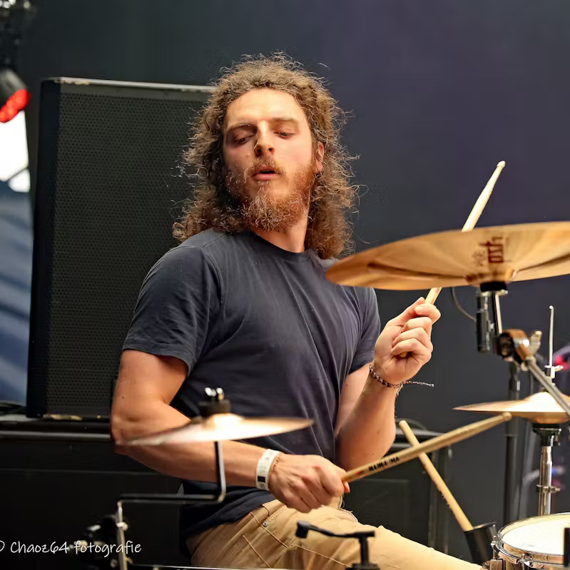
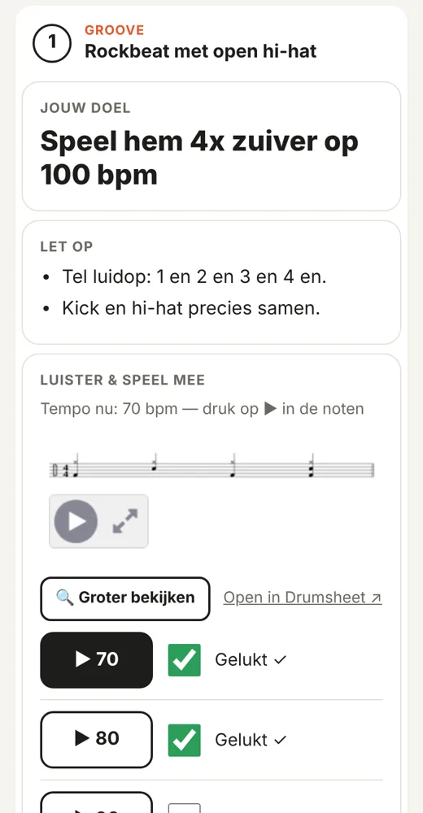

Welkom bij Drumhof
Op zoek naar drumlessen in Gent? Bij Drumhof geef ik les aan zowel beginners als licht gevorderde drummers. Ik ben Ben, ervaren drumleraar uit Gent en gepassioneerd muzikant.
Van nog nooit sticks vastgenomen te hebben tot een verdere verdieping van je basis skills. In mijn lessen leer je hoe je moet klinken als een rock of metal drummer. Accenten leggen, snelheid, dubbele basdrum, fills, je favoriete song leren, je zal het hier doen. Je leert op een elektrisch én een akoestisch drumstel.
Ik heb momenteel plaats voor nieuwe leerlingen. Liever eerst kennismaken? Boek gerust een proefles drummen voor slechts €20.
Ontmoet je docent

Ik drum al meer dan 15 jaar en was actief bij onder andere The H of Horse, The Currents en STAAL. Met The H of Horse bracht ik een EP en een album uit, en met STAAL verscheen recent een mini-album. Ik heb flink wat podiumervaring en stond recent nog als straatmuzikant op de Gentse Feesten 2025.
Naast drummen speel ik wat gitaar, wat handig is om tijdens de lessen te kunnen jammen. Ik had ook een YouTube-kanaal met game soundtrack covers, daardoor heb ik ervaring opgedaan met opname, mixen en muziekproductie.
Bekijk me aan het werk
Luister naar mijn bands
Gratis beginnerscursus
Wil je al eens proberen? In mijn gratis drumcursus leer je stokken vasthouden, de juiste houding en je eerste rockbeat, met noten die je kan beluisteren en meespelen.
Je eigen oefenpagina
Na elke les zet ik je huiswerk op je eigen oefenpagina, gewoon op je gsm. Met elke beat om mee te spelen en één duidelijk doel per oefening. Meer over de oefenpagina


Wat je kunt verwachten
- 🥁 Individuele drumlessen in Gent, afgestemd op jouw niveau
- ⏱️ Lesduur: 1 uur – €40 (cash of via overschrijving)
- ⏱️ Lesduur: 30 minuten – €25 (cash of via overschrijving)
- 📋 Persoonlijke oefenplannen op je eigen oefenpagina
- 🎁 Proefles drummen (1 uur) mogelijk voor slechts €20
Eén jaar drumles: Oji
Oji volgt nu een jaar les bij Drumhof. Zo klinkt dat vandaag:
Wat studenten zeggen
Veelgestelde vragen
Ik heb nog nooit gedrumd. Kan ik gewoon beginnen?
Zeker. Veel van mijn leerlingen startten vanaf nul. We beginnen met de basis en bouwen rustig op, op jouw tempo.
Heb ik thuis een drumstel nodig?
Om te starten niet: de les gaat door op mijn drumstel, en met een paar sticks en een oefenpad kan je thuis al heel wat oefenen. Wil je er echt voor gaan, dan raad ik wel een eigen drumstel aan. Zo ga je sneller vooruit, en dat maakt het net zo leuk. Ik denk graag mee over wat bij jou past.
Is het ook iets voor kinderen?
Ja. Er is geen vaste minimumleeftijd: als je aan de pedalen kan en er zin in hebt, kunnen we eraan beginnen. Twijfel je? Een proefles is de beste manier om het uit te zoeken.
Kan ik een specifiek nummer leren spelen?
Graag zelfs. Breng je favoriete nummer mee, dan werken we ernaartoe. Dat is vaak de leukste manier om technieken te leren.
Hoe betaal ik?
Cash of via overschrijving, wat jij het makkelijkst vindt.
Contact
Stuur me een bericht of bel me:
📱 +32 472 762 698 (bellen, sms of WhatsApp)
📍 Locatie: Bij Sint-Elisabethbegijnhof, Gent (adres bij boeking)